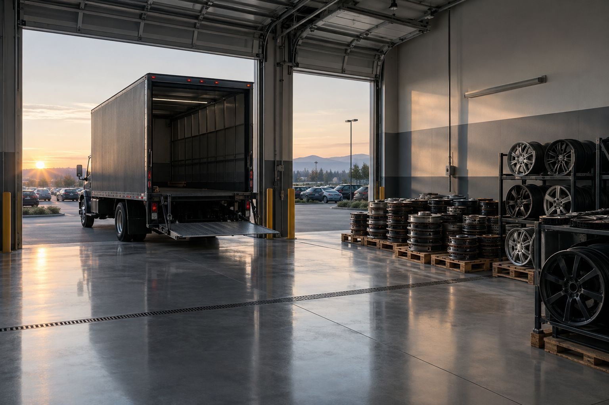
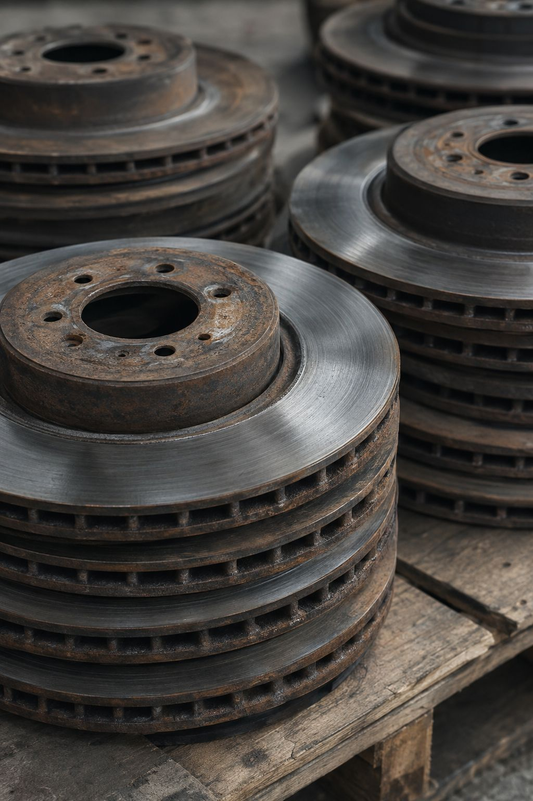
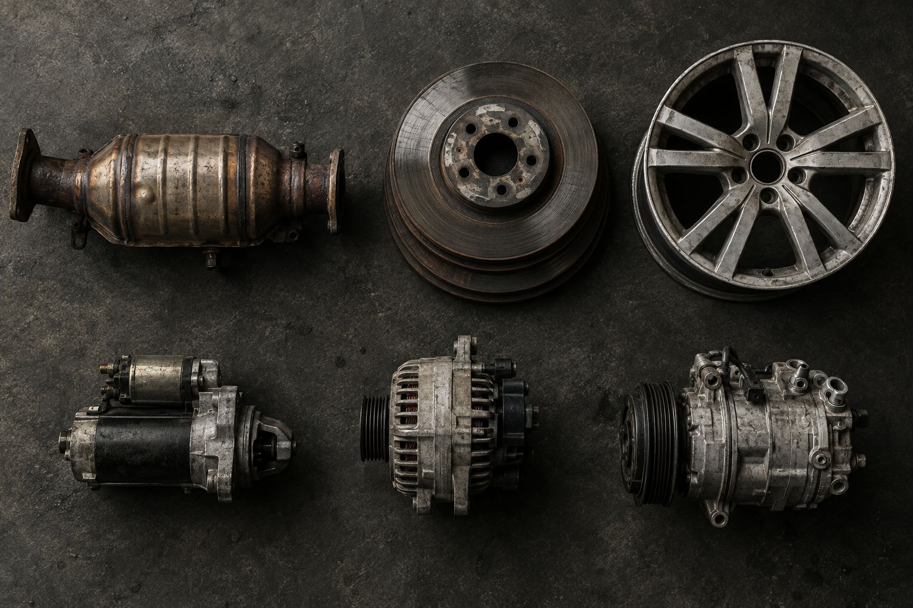
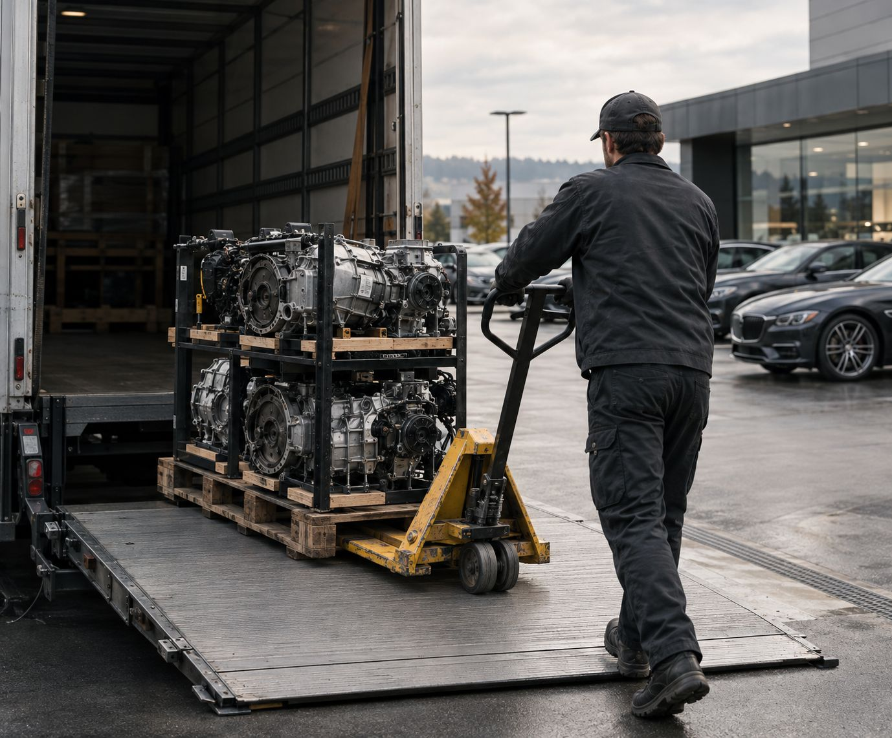
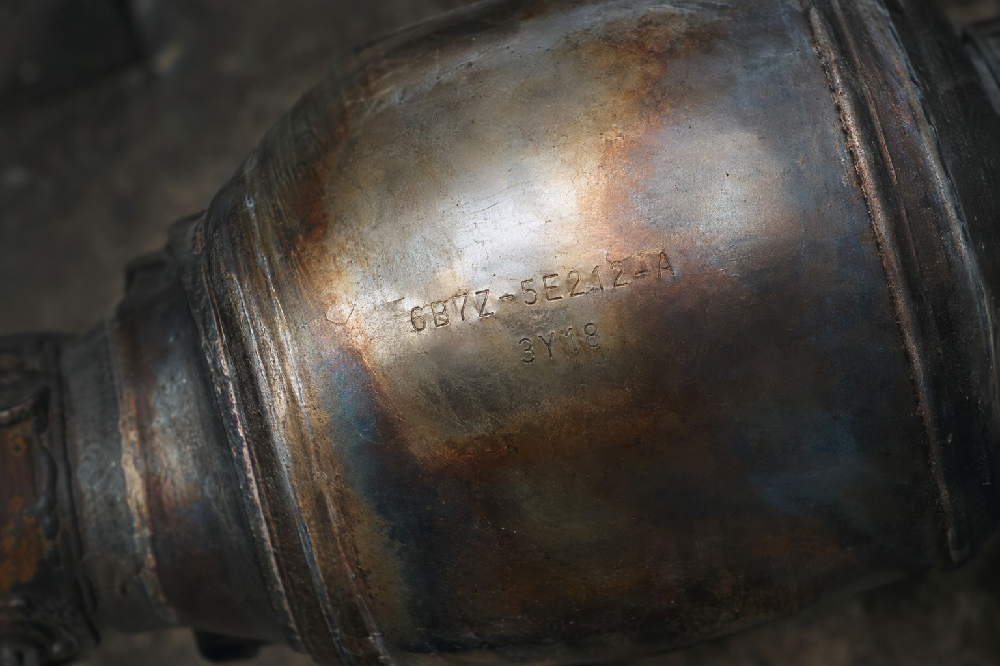

● For dealerships & dealer groups
Fixed ops makes a by-product. Recover it.




01Generated
Every brake job leaves something behind.
Rotors, converters, wheels and cores come off cars all day in a busy service drive.
Accumulates
Then it takes your floor.
Material stacks in the back lot, mixed, uncounted, and in the way.
Arrives professionally
A vendor your GM won't notice.
Scheduled windows, clean loading, no disruption to the drive.
Removed
Gone on schedule.
Separated by type, loaded, and off your property.
Value recovered
Itemized, not guessed.
Converters documented by unit. A record your controller can reconcile.
Repeats
Then it just runs.
One partner across every rooftop in your group.
Dealer questions
Before you call.
Can you service multiple rooftops?
Yes. Dealer groups get one schedule and one point of contact, with pickups coordinated by store.
How are converters documented?
Units are itemized at pickup so your store has a record of what left the property.
Do we need special bins?
No. We set up a simple staging plan around the space you already have.